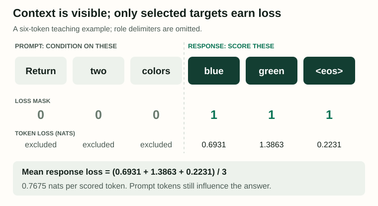
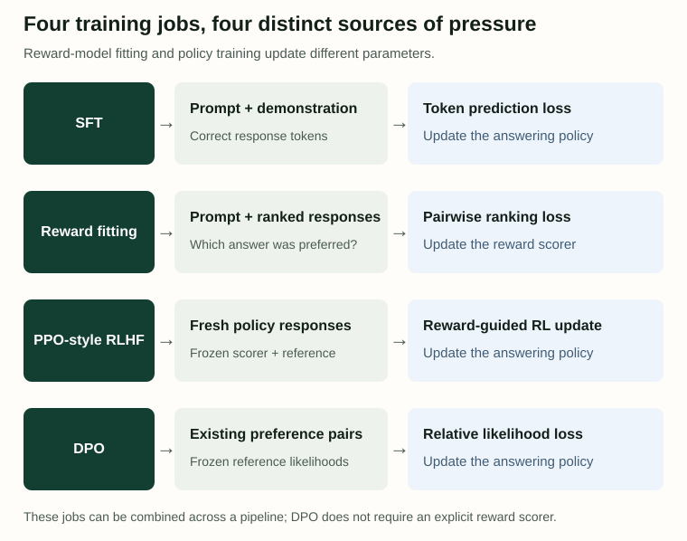
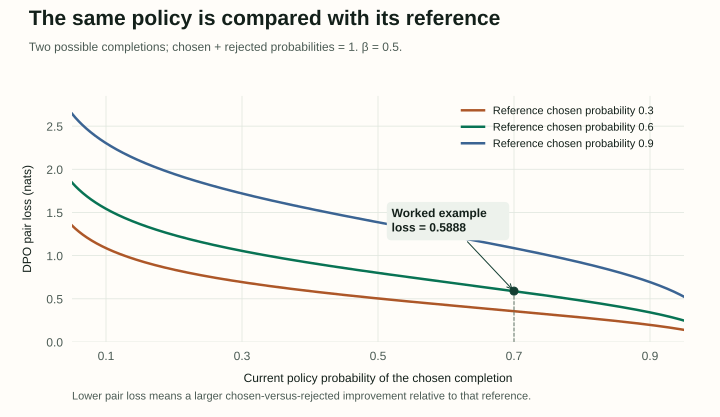

08 / Change the learning signal
Post-training: Teaching Models to Answer, Prefer, and Verify
A model can predict plausible text without reliably doing what a user asks. Post-training gives it more targeted evidence: demonstrations of useful answers, comparisons between alternatives, or feedback from a checker. The important question is what each kind of evidence actually teaches.
What response should be imitated? Which response was preferred? What result passed a verifier? These produce different training signals, even when they update the same language-model parameters.
An original companion to Jurafsky and Martin’s Chapter 8: Post-training, August 19, 2026 draft. This draft develops SFT, LoRA, preference models and DPO. Its PPO subsection is marked TBD, and its preference-evaluation and limitations subsections are empty; the explicitly identified extensions below use primary research papers.
1. Supervised fine-tuning scores the answer you demonstrate
In supervised fine-tuning, or SFT, each training example supplies a prompt and a desired response. The model still predicts tokens. What changes is the data and, commonly, which token predictions contribute to the loss. For response-only SFT, the prompt provides context while the demonstrated answer provides scored targets.
Use a tiny vocabulary in which each displayed item is one token. The prompt is “Return two colors”, and the demonstrated answer is “blue green <eos>”. The end marker teaches when to stop. We omit chat-role delimiters to expose the calculation; a real tokenizer and conversation template must specify those too.
Suppose the model assigns the demonstrated response tokens these conditional probabilities: P(blue | prompt) = 0.50; P(green | prompt, blue) = 0.25; P(<eos> | prompt, blue, green) = 0.80. Each prediction sees the actual earlier target tokens, not a sampled continuation. This is teacher forcing.
= (0.693147 + 1.386294 + 0.223144) / 3
= 0.767528 nats per response token

On narrow screens, scroll horizontally to inspect the complete figure.
A loss mask of [0, 0, 0, 1, 1, 1] expresses that choice. In general, sum masked token losses and divide by the number of scored tokens. Dividing by all six positions would produce 0.383764 here, silently halving this example’s loss and gradient scale. Across a batch, token-averaging and averaging each response’s mean also weight long and short responses differently.
Do not confuse this mask with the attention mask. The model can attend to the prompt while its prompt-target losses are excluded. Gradients from response predictions can still pass through computations involving prompt representations. Role markers, padding and answer boundaries need consistent handling, and an empty response with zero scored targets needs an explicit policy rather than division by zero.
2. A demonstration teaches its mistakes and its style too
A demonstration answers “what should come next here?” It does not tell the model which other answers would also be acceptable. If every answer begins with a long preamble, that pattern becomes part of the target. If a training answer contains an incorrect fact, minimizing its loss rewards reproducing that fact.
Instruction data can come from human writing, existing labeled tasks converted into prompts, or model-generated material. A translation pair can become an instruction plus a target translation. A sentiment label can become a short classification answer. Synthetic examples still need checks for correctness, duplicate patterns and coverage; their generator is a source of both useful variety and systematic errors.
Separate paraphrase robustness from new-task generalization. Holding out a reworded prompt tests something different from holding out an entire family of tasks. The chapter’s §8.1.2 discusses withholding related task clusters. For a practical collection, also check languages, output formats, ambiguity and examples where asking a clarifying question is appropriate.
3. LoRA changes the parameterization, not the learning objective
SFT describes a data-and-loss choice. Low-Rank Adaptation, or LoRA, describes which parameters are updated. It can be used with SFT or other compatible training objectives. The two terms therefore answer different questions.
Choose column-vector notation: a frozen matrix W has shape dout × din, and computes Wx. Add a trainable update BA, where A is r × din and B is dout × r. With an optional scale s, the new computation is Wx + sBAx. The update has rank at most r; the full effective matrix need not be low rank. Matrix letters vary across explanations, so check dimensions before multiplying.
Rank-8 factors: 8(4096) + 4096(8) = 65,536 trainable parameters
For this one matrix: 0.390625% as many trainable values
That ratio does not promise a 256-fold reduction in total training memory or time. The base weights, activations and computation still exist. Freezing weights avoids storing their parameter gradients and optimizer states; it does not remove every operation needed to propagate a gradient to trainable adapters. When compatible with the deployment representation, the update can be merged into W for inference. See Hu et al.’s LoRA paper for the method and its experiments.
4. A reward model learns to score comparisons
Now consider a prompt with two candidate answers. Both may be grammatical, but one may be clearer or better supported. Preference data records a chosen response yw and a rejected response yl for the same prompt x. “Chosen” describes the annotation; it is not proof that the answer is correct.
A reward model rφ(x, y) assigns each prompt–response pair a scalar score. The Bradley–Terry model turns the score difference into a pairwise preference probability:
Lreward = −ln σ(rw − rl)
For scores 1.1 and 0.3, the difference is 0.8, the modeled preference probability is 0.689974, and the observed chosen-over-rejected pair incurs loss 0.371101 nats. Adding 10 to both scores changes nothing: pairwise comparisons identify relative scores, not an absolute scale of human welfare.
The scorer may start from a language-model backbone with a scalar output head. Training it changes φ. It does not automatically change the answering policy. A scorer can rank already generated candidates, or supply feedback for a later policy-training stage. Human ratings, user votes and model judges also measure different populations and incentives; preserve the annotation question and disagreements instead of treating all preferences as interchangeable.

Scroll horizontally on narrow screens; each row names the parameters that change.
5. RLHF trains the policy on feedback about its own outputs
Paper-based extension. The source’s PPO subsection is unfinished. The high-level loop here follows Ouyang et al.’s InstructGPT work: begin with an instruction-tuned policy, collect response preferences, fit a reward model, then optimize the policy using reward feedback.
In the reinforcement-learning view, an action is a generated token and the state is the prompt plus generated prefix. The policy πθ supplies token probabilities. Sample a response, score it, and adjust the policy so better-rewarded behavior becomes more likely. A reward that arrives only at the end still has to influence the sequence of token choices that produced it.
Optimizing a fallible scorer too aggressively can favor its blind spots. A common additional constraint keeps the new policy near a frozen reference policy, often the starting SFT checkpoint. One idealized objective is:
The KL is an expectation of log[πθ(y|x)/πref(y|x)] under the current policy. One sampled log ratio can be negative; the full KL cannot. The penalty discourages distributional drift, but it does not guarantee preservation of every useful skill. Retention needs direct evaluation.
PPO-style training uses advantages and constrained policy updates rather than treating a reward as a target token. A value estimator can provide a baseline for whether an outcome was better than expected. Keep two comparisons separate: PPO’s update ratio compares the new policy with the policy that generated the rollouts; the KL penalty compares with the chosen reference. Their roles and update schedules differ. This paragraph describes the loop, not a full PPO implementation.
6. DPO learns from pairs without fitting a separate scorer
Direct Preference Optimization uses an existing dataset of preference pairs, the trainable policy and a frozen reference. Standard offline DPO does not need to sample new responses inside each update or train an explicit reward model. It directly scores the chosen and rejected responses with both language models.
Let ℓθ,w mean ln πθ(yw|x), and use analogous notation for the rejected response and reference. These are whole-response log probabilities: sum the scored response-token log probabilities, conditioned on the prompt and earlier response tokens. Keep tokenization, masks and end-token conventions consistent.
s = βΔ
LDPO = −ln σ(s)
The signs matter: reward an improvement in chosen-versus-rejected log odds relative to the reference. Under the KL-regularized formulation, an implicit reward can be written β ln(πθ/πref) plus a prompt-specific constant. That constant cancels between responses to the same prompt, producing the pair loss. This is the central connection developed in Rafailov et al.’s DPO paper and §8.4.2.
A complete two-response calculation
For this toy example, exactly two complete responses are possible. The reference assigns the chosen response 0.60 and the rejected response 0.40. The current policy assigns them 0.70 and 0.30. Each row is a valid distribution. Real language models have many more possible responses, but the same pair formula applies.
= 0.847298 − 0.405465 = 0.441833
At β = 0.5: s = 0.220916
σ(s) = 0.555006; LDPO = 0.588777 nats
The policy generates the chosen response with probability 70%. The DPO preference model assigns this pair probability 55.50%. Those are different quantities. At policy = reference, Δ = 0 and the pair loss is ln 2 ≈ 0.693147, even if the reference already strongly favors the chosen response.

Scroll horizontally on narrow screens to inspect axes and legend.
Try it: change the policy, reference and β
The green portion of each bar is the chosen-response probability; the remainder is rejected. Both rows stay normalized. Moving the reference slider compares hypothetical frozen starting points; an actual DPO update keeps its reference fixed. Try policy 0.80 with reference 0.90: the policy favors the chosen response in absolute terms, yet has moved against that preference relative to its reference.
The displayed derivative is −βσ(−βΔ) with respect to the policy’s two-response log odds. It is negative: increasing those odds lowers this pair’s loss. β is not a learning rate. In the underlying reward-minus-KL objective, larger β penalizes drift more strongly. In this lab, which holds distributions fixed, changing β simply rescales the observed margin; that immediate effect is not a prediction of the final trained policy.
Nor does lower DPO loss guarantee that every chosen response’s absolute likelihood increases. With other completions available, chosen and rejected log probabilities could change from [−3.0, −4.0] to [−3.1, −4.3]. The chosen probability falls, but its log-odds advantage grows from 1.0 to 1.2. Shared parameters and probability normalization make this distinction matter beyond the two-response lab.
7. Verifiable rewards change where feedback comes from
Paper-based extension. The chapter introduces RL with verifiable rewards but does not develop an algorithmic section. A concrete research example is DeepSeek-R1’s rule-based reward setup, which uses checkable answer correctness and output-format feedback.
Here a checker supplies the signal: an answer matches a known result, or generated code passes specified tests. The policy still generates an output and is optimized using feedback. A learned preference scorer is not required for that checkable component. Rewards can combine several components, so inspect which one rewards correctness and which merely rewards format.
Verifiability has a boundary. Suppose the task is to sum a list, but the only tests are [] → 0 and [0] → 0. A program that always returns zero receives full reward while failing [2, 3]. The verifier measured its tests, not universal correctness. A correct final numerical answer also does not establish that every explanatory step was valid.
Fresh training samples let the model explore behaviors absent from a fixed demonstration set, but learning still depends on encountering informative outcomes. Track reward components separately, inspect high-reward failures, and use independent test cases. More generated reasoning tokens are a resource cost and a behavior change; they are not by themselves evidence of better reasoning.
8. Evaluate the intended behavior and what might have been lost
Training loss answers whether the optimizer fits its signal. It does not settle whether the assistant improved. Evaluate SFT on held-out instruction families, reward models on held-out comparisons, and the answering policy on actual tasks. Keep the prompt distribution, decoding settings and generation budget explicit so model changes are not mixed with easier prompts or more attempts.
A preference win rate needs a stated judge and comparison procedure. Randomize answer order, allow ties where appropriate, and inspect whether length or presentation drives choices. A judge that shares a training model’s blind spots can agree with it for the wrong reason. Use task-specific correctness checks alongside preference judgments when correctness is measurable.
Measure retained abilities too: for example, language coverage, factual tasks, formatting reliability and performance outside the new training domain. Compare both gains and regressions against the starting checkpoint. A small KL on training prompts does not prove preservation on every deployment input. Regularization, data mixtures and checkpoint selection are tools to investigate, not automatic guarantees.
Reward gaming means the measured score improves through behavior that misses the intended goal. It can involve exploiting a learned scorer’s shortcuts or a deterministic checker’s incomplete coverage. Review failures by category, keep development decisions separate from final evaluation, and repeat checks after changes to the data, reward or sampling procedure. Post-training is an empirical adjustment to behavior, not a certificate of universal reliability.
Reproduce and check the examples
The standard-library Python script reproduces the SFT losses, reward-pair calculation and DPO example. It checks all 1,444 settings of the lab’s two sliders and β choices, including finite-difference verification of the policy-log-odds derivative. The figure generator recreates the three original SVGs; its curve plot uses Matplotlib.
Does masking prompt losses stop the model from reading the prompt?
No. Loss masking chooses supervised targets. Attention masking determines which context positions a prediction may use. Response-only SFT normally keeps the prompt visible.
Does a reward model need to exist before DPO?
Standard offline DPO needs preference pairs and a reference policy, but no separately trained reward scorer. The pairs still came from some annotation or judgment process.
Is a lower pair loss evidence that an answer became true?
No. It indicates better fit to the specified preference pair relative to the reference. Correctness must be checked using evidence appropriate to the task.
Sources and coverage
SLP Chapter 8, August 19, 2026: §8.1 instruction tuning; §8.2 parameter-efficient adaptation; §8.3 preference data and reward models; §8.4 the KL-regularized objective; §8.4.2 DPO. The named paper-based extensions fill explanatory gaps without representing the draft’s unfinished subsections as complete.
Primary supplements: Hu et al., LoRA; Ouyang et al., InstructGPT; Rafailov et al., DPO; DeepSeek-AI, DeepSeek-R1, January 2025 report. All numeric examples and diagrams in this article are independently constructed.